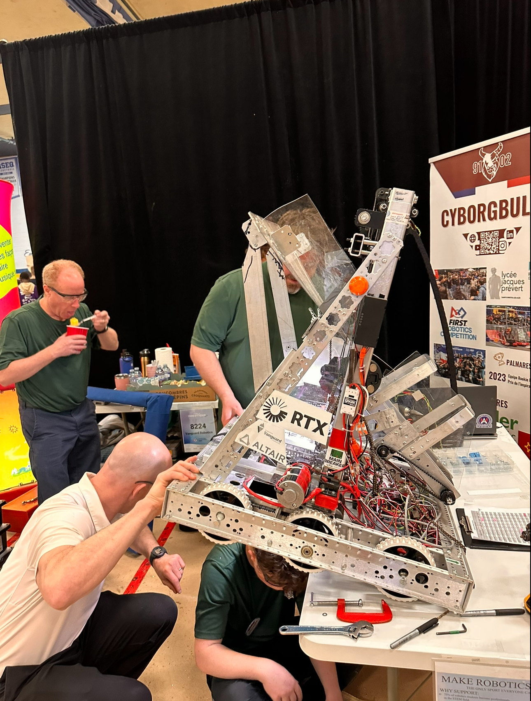

COMMENT NOUS AVONS COMMENCÉ

En 2022, l'équipe était en train de péricliter. Un seul professeur animait le club, composé de quatre membres dont la présence était irrégulière. Mi-janvier 2023, le professeur responsable du club de robotique Vanguard, qui était aussi le professeur de sciences de Jacob et William, les a contactés pour leur proposer de participer aux activités de robotique. « Ces deux élèves étaient mon dernier espoir pour l'équipe. S'ils ne s'étaient pas inscrits, j'aurais tout arrêté », a déclaré Bray. Jacob et William ont décidé d'assister à une réunion du club pendant la pause déjeuner. Il y avait environ huit personnes dans la salle, dont la moitié ne s'intéressait même pas à la robotique ; pour être honnête, ils étaient tous sur leur téléphone. « On était plutôt intrigués, mais je ne saurais pas vous dire ce qu'ils faisaient ni de quoi il s'agissait. On allait essayer », a dit Jacob. La salle contenait une trentaine d'outils, quatre tables de travail, un ordinateur, un professeur et quatre membres. Bref, Jacob et William ont rejoint le club et ont encouragé leurs amis à les rejoindre. L'équipe s'est agrandie pour compter environ huit membres et deux mentors, Bray et Warren (le père de Jacob). Ce club de huit étudiants a construit un robot FRC à propulsion par chenilles, un robot qui se déplaçait à peine. Grâce à l'aide de John de FIRST Québec, ils ont réussi à le faire bouger à l'aide de LabVIEW. Ils se sont rendus à la compétition avec le robot et quelques outils, chargés dans les voitures de Bray et Warren. Lors de la compétition, l'équipe s'est classée 38e sur 40. Le club a également participé au CRC (Compétition canadienne de robotique) cette année-là. Jacob a trouvé deux commanditaires pour nous aider à traverser l'année, et la communauté de Jacob a fait d'incroyables dons d'outils. L'objectif de Jacob et William pour cette nouvelle année était de faire mieux que les années précédentes. Durant cette année, nous n'avons jamais baissé les bras ; des membres ont quitté le club et d'autres l'ont rejoint. Des réunions ont eu lieu ici et là, sans véritable structure.
L'année suivante, en 2024, c'était nettement mieux, mais pas encore parfait. Nous avons construit un très beau robot pour le CRC, sur lequel nous avons passé énormément de temps à travailler : construction, programmation et entraînement. L'équipe est passée à une quinzaine de membres. Notre première compétition de l'année était le CRC. Cette année, nous ne nous sommes pas contentés du robot. Nous avons créé un site web, une vidéo, un tutoriel, et même un kiosque et des costumes. Le thème choisi pour le CRC était Toy Story. Un groupe a conçu et réalisé le kiosque avec beaucoup d'efforts. Notre robot a très bien fonctionné pendant la compétition, ce qui nous a beaucoup impressionnés, mais évidemment, il n'atteint pas la vitesse du FRC. Au CRC, nous avons atteint les demi-finales et terminé 12èmes au classement général, en prenant en compte le site web, le kiosque, les costumes, la vidéo, le tutoriel et les performances du robot. Pas mal du tout ! Nous nous sommes tous bien amusés. Ensuite, il y a eu le FRC, sept jours après le CRC. Nous n'avions pas commencé la construction avant le CRC, nous n'avions donc que cinq jours pour construire, programmer et tester le robot. Le lendemain, c'était les vacances de mars, alors que faire d'autre que tout charger ? Nous l'avons emmené chez Jacob et Warren. Nous avons construit le robot entièrement dans le garage de Jacob. Un grand merci à Jacob, William, Nicholas et Charles d'avoir passé leurs vacances de mars dans mon garage à construire ce robot, avec l'aide de nos mentors Olivier (de RTX), Warren (de CAE) et Jennifer. Le code a été créé avec l'aide de Warren et Carlos (mentors). Nous n'avons pas pu nous entraîner du tout. Nous l'avons construit en cinq jours, en terminant la veille de la compétition.  Cette année, Jacob et William ont donc décidé d'arrêter là. « C'est notre dernière année, il faut qu'on termine en beauté », déclare Jacob. Et c'est exactement ce qui s'est passé jusqu'à présent. Des technologies flambant neuves, une nouvelle structure d'équipe avec près de 40 membres et 10 mentors : un excellent début d'année. Cette année sera mémorable. C'est l'année où le club de robotique Vanguard devient l'équipe de robotique Vanguard. Cette équipe a été sauvée par Jacob et William. Et maintenant, on ne peut plus s'arrêter, il y a encore tellement de choses à venir. Jacob et William sont tous deux capitaines de l'équipe de robotique Vanguard depuis trois ans. Ce sont d'ailleurs leurs dernières années au lycée Vanguard. Après cette année, nous espérons que le travail accompli pour faire de cette équipe une équipe reconnue sera un jour récompensée.